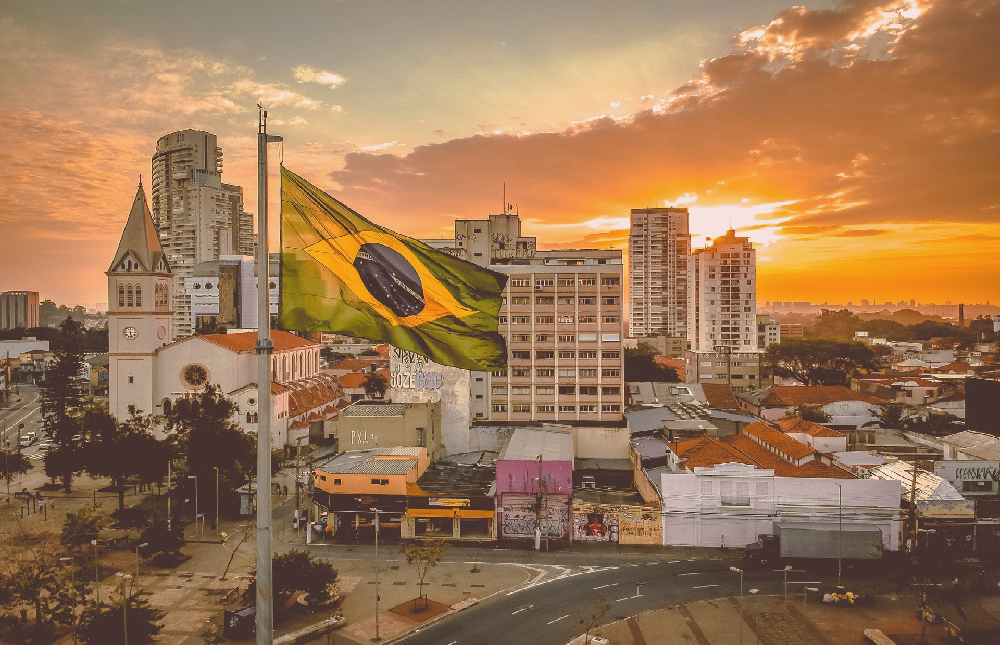
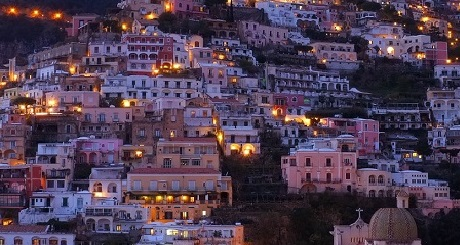
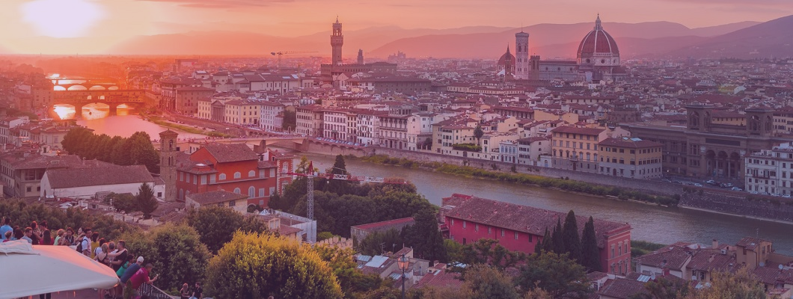
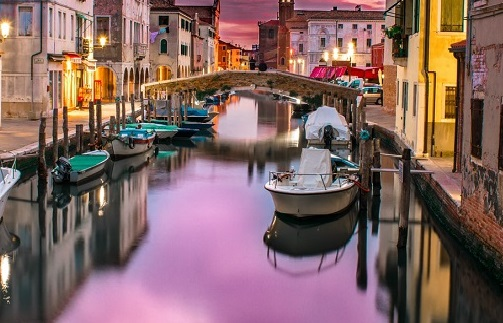

BRAZIL


Brazil occupies a large area along the eastern coast of South America and includes much
of the continent's interior, sharing land borders with Uruguay to the south;
Argentina and Paraguay to the southwest; Bolivia and Peru to the west; Colombia to the northwest;
and Venezuela, Guyana, Suriname and France (French overseas region of French Guiana) to the north.
It shares a border with every South American country except Ecuador and Chile.
ITALY



Italy, officially the Italian Republic is a country consisting of a peninsula delimited by the Alps and surrounded by
several islands. Italy is located in south-central Europe, and is considered part of western Europe. A unitary
parliamentary republic with Rome as its capital, the country covers a total area of 301,340 km²
and shares land borders with France, Switzerland, Austria,
Slovenia, and the enclaved microstates of Vatican City and San Marino.
JAPAN
Japan is an island country in East Asia located in the northwest Pacific Ocean.
It is bordered by the Sea of Japan to the west and extends from the Sea of Okhotsk in
the north to the East China Sea and Taiwan in the south. Part of the Pacific Ring of Fire,
Japan comprises an archipelago of 6,852 islands covering 377,975 square kilometers (145,937 sq mi);
the country's five main islands, from north to south, are Hokkaido, Honshu, Shikoku, Kyushu, and Okinawa.
Tokyo is Japan's capital and largest city;
other major cities include Yokohama, Osaka, Nagoya, Sapporo, Fukuoka, Kobe, and Kyoto.